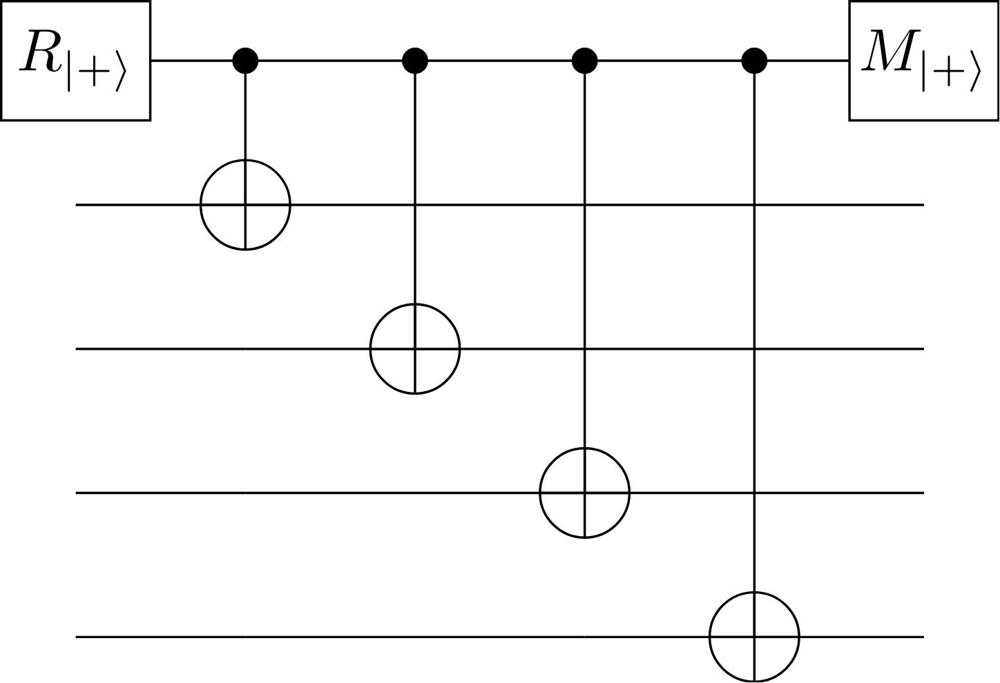
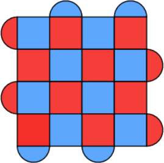
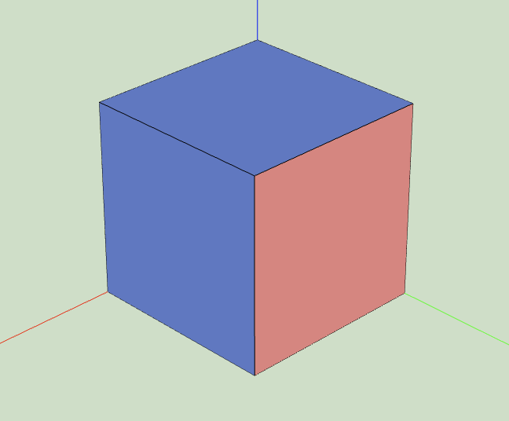

Surface codes#
This page introduces the surface code, the quantum error-correcting code at the
heart of tqec. The goal is to build an intuition for how the surface code works
and why it is a leading candidate for fault-tolerant quantum computation, before
connecting these ideas to tqec’s abstractions.
For a comprehensive treatment, see Fowler [1].
Why error correction?#
Physical qubits are noisy. Every gate, measurement, and idle period introduces errors. A single physical qubit cannot store quantum information reliably for the duration of a useful computation. Quantum error correction (QEC) solves this by encoding a single logical qubit across many physical qubits, so that errors can be detected and corrected without destroying the encoded information.
The surface code is one of the most promising QEC schemes because:
It requires only nearest-neighbor interactions on a 2D grid of qubits, matching the layout of current superconducting hardware.
It has a comparatively high error threshold (~1%).
Its decoding problem is well-studied and efficient decoders exist.
Error threshold#
Every QEC code has an error threshold: a physical error rate below which increasing the code distance suppresses the logical error rate exponentially. If the physical error rate \(p\) is below the threshold \(p_\text{th}\), the logical error rate scales approximately as:
This means that as long as the hardware operates below threshold, making the code larger (increasing \(d\)) makes the logical qubit exponentially more reliable. If \(p > p_\text{th}\), however, increasing the code distance actually makes things worse — the additional qubits introduce more errors than the code can correct.
The surface code’s threshold of approximately 1% is high compared to other topological codes, making it compatible with the error rates achieved by current superconducting and trapped-ion hardware.
Stabilizers and the code space#
The surface code is a stabilizer code. A stabilizer code defines its code space — the subspace where logical information lives — through a set of commuting Pauli operators called stabilizers. Any state \(|\psi\rangle\) in the code space is a simultaneous \(+1\) eigenstate of every stabilizer \(S\), i.e. \(S|\psi\rangle = |\psi\rangle\).
On the surface code’s 2D qubit grid, stabilizers come in two flavors:
\(X\)-type stabilizers (sometimes called vertex operators): products of Pauli-\(X\) on the data qubits surrounding a plaquette. These detect \(Z\)-type (phase-flip) errors on those data qubits.
\(Z\)-type stabilizers (sometimes called face operators): products of Pauli-\(Z\) on the data qubits surrounding a plaquette. These detect \(X\)-type (bit-flip) errors on those data qubits.
Each stabilizer is measured by an ancilla (measure) qubit placed at the center of its plaquette. The measurement is performed by a short sequence of CNOT (or CX/CZ) gates between the ancilla and the surrounding data qubits, as described in the Plaquette section of the Terminology page. The circuits for the two stabilizer types are shown below:

Circuit for an \(X\)-type (XXXX) stabilizer measurement.#
{kind=link}

Circuit for a \(Z\)-type (ZZZZ) stabilizer measurement.#
Detecting errors#
When a physical error occurs on a data qubit, some stabilizer measurements will flip from \(+1\) to \(-1\). Each ancilla qubit measurement yields a 0 or 1, corresponding to the \(+1\) or \(-1\) eigenvalue of its stabilizer. These flipped outcomes are called syndrome bits. Because each data qubit participates in multiple stabilizers, a single error creates a characteristic pattern of syndrome bits.
Note that an even number of identical errors on data qubits sharing a stabilizer can cancel out, leaving no syndrome signal for that stabilizer. This is one reason the code distance limits the number of correctable errors.
Crucially, measuring stabilizers does not reveal the encoded logical information — it only reveals parity information about errors. This is the key property that allows error correction without collapsing the logical state.
The decoding problem is to infer, from the observed syndrome, which errors most likely occurred. A decoder is an algorithm that solves this problem and produces a correction. The correction does not need to exactly reverse the physical error; it only needs to return the state to the code space without introducing a logical error.
The 2D layout#
The surface code arranges data qubits and measure qubits on a 2D grid. A standard rotated surface code patch is shown below:
{kind=link}

A rotated surface code patch. Red plaquettes correspond to \(X\)-type stabilizers and blue plaquettes correspond to \(Z\)-type stabilizers. Data qubits sit at the intersections of plaquettes.#
Each measure qubit sits at the center of its plaquette and measures the stabilizer formed by the surrounding data qubits.
In tqec, this layout is generated by templates, which
produce a 2D array of indices representing different plaquette types. Templates
are the mechanism that makes the surface code layout scalable across different
code distances.
Boundaries#
A surface code patch has four edges. Two opposite edges are \(X\)-type boundaries, and the other two are \(Z\)-type boundaries. Stabilizers along the boundary involve fewer data qubits (two instead of four) because they sit at the edge of the patch.
The boundary types determine which logical operators can terminate on them:
A logical \(Z\) operator is a chain of Pauli-\(Z\) operators connecting the two \(Z\)-type boundaries.
A logical \(X\) operator is a chain of Pauli-\(X\) operators connecting the two \(X\)-type boundaries.
In tqec, the boundary types of a surface code patch are encoded in the
ZXCube naming convention. For example, a ZXZ cube has
\(Z\)-type boundaries facing the X-axis, \(X\)-type boundaries facing
the Y-axis, and \(Z\)-type boundaries facing the Z (time) axis.
Code distance#
The code distance \(d\) is the minimum number of physical errors required to cause an undetectable logical error. Equivalently, it is the minimum weight of any logical operator. A distance-\(d\) code can correct up to \(\lfloor (d-1)/2 \rfloor\) errors.
For a distance-\(d\) surface code, the patch uses \(d^2\) data qubits and \(d^2 - 1\) measure qubits, for a total of \(2d^2 - 1\) physical qubits per logical qubit.
In tqec, the code distance is controlled through a scaling parameter
\(k\), where \(d = 2k + 1\). Templates and plaquettes are defined in
terms of \(k\), so the same logical computation can be compiled at any
desired code distance.
QEC rounds and the space-time picture#
Error correction is not a one-shot process. Stabilizer measurements are repeated in each QEC round. This repetition serves two purposes:
Measurement errors — a single stabilizer measurement may itself be faulty. By comparing consecutive rounds, measurement errors can be distinguished from data qubit errors.
Continuous protection — errors accumulate over time, so ongoing stabilizer measurement is needed throughout the computation.
This leads naturally to a space-time picture. The 2D qubit grid extends along a third axis representing time (QEC rounds). In this 3D view:
A surface code memory experiment is a rectangular prism: the spatial patch extended through \(d\) rounds of stabilizer measurement.
Errors create syndromes that form 1D strings in this 3D space.
Detection events (syndrome flips between consecutive rounds) live on the edges between time slices.
{kind=link}

A memory experiment represented as a single cube in tqec. Blue (Z) and
red (X) faces indicate the boundary types. The vertical axis is time.#
This space-time perspective is central to tqec, where computations are
represented as 3D structures composed of cubes and
pipes, organized in a
BlockGraph. Each cube corresponds to
\(d\) rounds of stabilizer measurement, occupying
approximately \(d^3\) space-time volume.
Logical operations#
A key advantage of the surface code is that many logical operations can be performed by manipulating the code patches in space and time, without needing transversal gates or magic state distillation. These geometric operations are the basis of lattice surgery.
Common logical operations in the surface code include:
Initialization and measurement — creating a logical qubit in a known state or reading it out. The basis (\(X\) or \(Z\)) of the initialization / measurement is determined by the temporal boundary of the corresponding cube in
tqec(see ZXCube).Logical identity (memory) — maintaining a logical qubit through repeated QEC rounds with no change. In
tqec, each non-spatially-connected cube represents \(d\) rounds of memory.Multi-qubit operations — implemented via lattice surgery (merging and splitting code patches). In
tqec, spatial pipes connect cubes to represent these operations.
Connecting to tqec#
The surface code concepts above map directly to tqec’s abstractions:
Surface code concept |
|
|---|---|
Surface code patch (at one time step) |
|
Stabilizer measurement circuit |
|
Patch extended through time |
Cube (\(\approx d^3\) space-time volume) |
Boundary type (X or Z) |
Face labels in ZXCube naming |
Logical operator tracking |
|
Spatial merging / extension |
Pipe connecting cubes |
Code distance \(d\) |
Scaling parameter \(k\) with \(d = 2k + 1\) |
Full computation |
|
For a hands-on introduction to building computations using these abstractions, see the Quick start using tqec or the Build Computations tutorial.